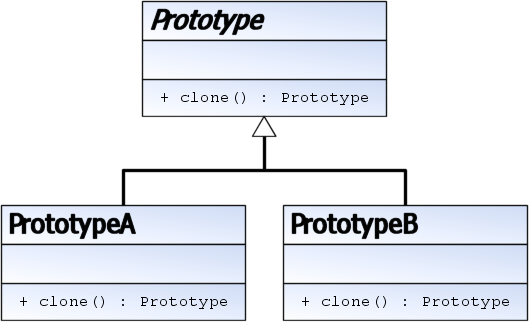

Prototype
Problème
On souhaite créer une instance qui soit une copie conforme d'une autre.
Cas de figure :
- Copier une instance avec des paramètres par défaut
- On ne souhaite pas modifier l'objet, mais renvoyer une instance modifiée
Solution
Toutes les classes dérivées implémentent une méthode "clone" renvoyant une copie conforme.

Exemple dans l'API Java
Les exemples sont légion, l'API dispose d'une interface Cloneable.
Mise en garde
Il convient d'être attentif aux copies des variables membres, en particulier pour les objets qui peuvent être modifiés après la construction (notion d'Immutable Objects).
A titre d'exemple, sans précaution particulière, deux copies pourront pointer sur le même tableau.
Lien(s) utile(s)
https://fr.wikibooks.org/wiki/Patrons_de_conception/Prototype